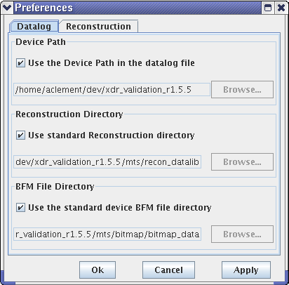
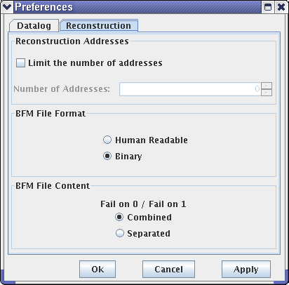

Preferences
The path to your device and to your reconstruction directory can be set with the Preferences dialog, which you can open by choosing in the main viewer window.

With the Datalog tab selected you can define the paths for:
- Device: Use the Device Path in the data log file or type in your own path.
- Reconstruction Directory: Use standard reconstruction directory (<device>/mts/recon_datalib/) or enter your own path.
- BFM File Directory: Use the standard device BFM file directory (<device>/mts/bitmap/bitmap_data/)or enter your own.
Click OK.
The Preferences dialog window also includes the Reconstruction tab.

In the window you can specify:
- Reconstruction Addresses: Selecting Limit the number of addresses lets you specify the number of addresses from 0 to (2 to the power of 63 -1). If cleared, the number of addresses is unlimited.
- BFM File Format: Allows you to choose between human readable and binary file formats.
- BFM File Content: You can select to have the two fail maps for fail on 0 and fail on 1 or combine both cases in one fail map.